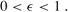
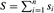
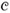
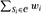
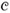
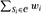
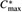

|
|
< Day Day Up > |
|
An instance of the subset-sum problem is a pair (S, t), where S is a set {x1, x2, ..., xn} of positive integers and t is a positive integer. This decision problem asks whether there exists a subset of S that adds up exactly to the target value t. This problem is NP-complete (see Section 34.5.5).
The optimization problem associated with this decision problem arises in practical applications. In the optimization problem, we wish to find a subset of {x1, x2, ..., xn} whose sum is as large as possible but not larger than t. For example, we may have a truck that can carry no more than t pounds, and n different boxes to ship, the ith of which weighs xi pounds. We wish to fill the truck with as heavy a load as possible without exceeding the given weight limit.
In this section, we present an exponential-time algorithm for this optimization problem and then show how to modify the algorithm so that it becomes a fully polynomial-time approximation scheme. (Recall that a fully polynomial-time approximation scheme has a running time that is polynomial in 1/∈ as well as in the size of the input.)
Suppose that we computed, for each subset S′ of S, the sum of the elements in S′, and then we selected, among the subsets whose sum does not exceed t, the one whose sum was closest to t. Clearly this algorithm would return the optimal solution, but it could take exponential time. To implement this algorithm, we could use an iterative procedure that, in iteration i, computes the sums of all subsets of {x1, x2, ..., xi}, using as a starting point the sums of all subsets of {x1, x2, ..., xi-1}. In doing so, we would realize that once a particular subset S′ had a sum exceeding t, there would be no reason to maintain it, since no superset of S′ could be the optimal solution. We now give an implementation of this strategy.
The procedure EXACT-SUBSET-SUM takes an input set S = {x1, x2, ..., xn} and a target value t; we'll see its pseudocode in a moment. This procedure iteratively computes Li, the list of sums of all subsets of {x1, ..., xi} that do not exceed t, and then it returns the maximum value in Ln.
If L is a list of positive integers and x is another positive integer, then we let L + x denote the list of integers derived from L by increasing each element of L by x. For example, if L = 〈1, 2, 3, 5, 9〉, then L + 2 = 〈3, 4, 5, 7, 11〉. We also use this notation for sets, so that
S + x = {s + x : s ∈ S}.
We also use an auxiliary procedure MERGE-LISTS(L, L′) that returns the sorted list that is the merge of its two sorted input lists L and L′ with duplicate values removed. Like the MERGE procedure we used in merge sort (Section 2.3.1), MERGE-LISTS runs in time O(|L| + |L′|). (We omit giving pseudocode for MERGE-LISTS.)
EXACT-SUBSET-SUM(S, t) 1 n ← |S| 2 L0 ← 〈0〉 3 for i ← 1 to n 4 do Li ← MERGE-LISTS(Li-1, Li-1 + xi) 5 remove from Li every element that is greater than t 6 return the largest element in Ln
To see how EXACT-SUBSET-SUM works, let Pi denote the set of all values that can be obtained by selecting a (possibly empty) subset of {x1, x2, ..., xi} and summing its members. For example, if S = {1, 4, 5}, then
|
P1 |
= |
{0, 1} , |
|
P2 |
= |
{0, 1, 4, 5} , |
|
P3 |
= |
{0, 1, 4, 5, 6, 9, 10} . |
Given the identity
we can prove by induction on i (see Exercise 35.5-1) that the list Li is a sorted list containing every element of Pi whose value is not more than t. Since the length of Li can be as much as 2i, EXACT-SUBSET-SUM is an exponential-time algorithm in general, although it is a polynomial-time algorithm in the special cases in which t is polynomial in |S| or all the numbers in S are bounded by a polynomial in |S|.
We can derive a fully polynomial-time approximation scheme for the subset-sum problem by "trimming" each list Li after it is created. The idea is that if two values in L are close to each other, then for the purpose of finding an approximate solution there is no reason to maintain both of them explicitly. More precisely, we use a trimming parameter δ such that 0 < δ < 1. To trim a list L by δ means to remove as many elements from L as possible, in such a way that if L′ is the result of trimming L, then for every element y that was removed from L, there is an element z still in L′ that approximates y, that is,
We can think of such a z as "representing" y in the new list L′. Each y is represented by a z satisfying inequality (35.22). For example, if δ = 0.1 and
L = 〈10, 11, 12, 15, 20, 21, 22, 23, 24, 29〉,
then we can trim L to obtain
L′ = 〈10, 12, 15, 20, 23, 29〉,
where the deleted value 11 is represented by 10, the deleted values 21 and 22 are represented by 20, and the deleted value 24 is represented by 23. Because every element of the trimmed version of the list is also an element of the original version of the list, trimming can dramatically decrease the number of elements kept while keeping a close (and slightly smaller) representative value in the list for each deleted element.
The following procedure trims list L = 〈y1, y2, ..., ym〉 in time Θ(m), given L and δ, and assuming that L is sorted into monotonically increasing order. The output of the procedure is a trimmed, sorted list.
TRIM(L, δ) 1 m ← |L| 2 L′ ← 〈y1〉 3 last ← y1 4 for i ← 2 to m 5 do if yi > last · (1 + δ) ▹ yi ≥ last because L is sorted 6 then append yi onto the end of L′ 7 last ← yi 8 return L′
The elements of L are scanned in monotonically increasing order, and a number is put into the returned list L′ only if it is the first element of L or if it cannot be represented by the most recent number placed into L′.
Given the procedure TRIM, we can construct our approximation scheme as follows. This procedure takes as input a set S = {x1, x2, ..., xn} of n integers (in arbitrary order), a target integer t, and an "approximation parameter" ∈, where
| (35.23) |  |
It returns a value z whose value is within a 1 + ∈ factor of the optimal solution.
APPROX-SUBSET-SUM(S, t, ∈) 1 n ← |S| 2 L0 ← 〈0〉 3 for i ← 1 to n 4 do Li ← MERGE-LISTS(Li-1, Li-1 + xi) 5 Li ← TRIM(Li, ∈/2n) 6 remove from Li every element that is greater than t 7 let z* be the largest value in Ln 8 return z*
Line 2 initializes the list L0 to be the list containing just the element 0. The for loop in lines 3-6 has the effect of computing Li as a sorted list containing a suitably trimmed version of the set Pi , with all elements larger than t removed. Since Li is created from Li-1, we must ensure that the repeated trimming doesn't introduce too much inaccuracy. In a moment, we shall see that APPROX-SUBSET-SUM returns a correct approximation if one exists.
As an example, suppose we have the instance
S = 〈104, 102, 201, 101〉
with t = 308 and ∈ = 0.40. The trimming parameter δ is ∈/8 = 0.05. APPROX-SUBSET-SUM computes the following values on the indicated lines:
|
line 2: |
L0 |
= |
〈0〉, |
|
line 4: |
L1 |
= |
〈0, 104〉, |
|
line 5: |
L1 |
= |
〈0, 104〉, |
|
line 6: |
L1 |
= |
〈0, 104〉, |
|
line 4: |
L2 |
= |
〈0, 102, 104, 206〉, |
|
line 5: |
L2 |
= |
〈0, 102, 206〉, |
|
line 6: |
L2 |
= |
〈0, 102, 206〉, |
|
line 4: |
L3 |
= |
〈0, 102, 201, 206, 303, 407〉, |
|
line 5: |
L3 |
= |
〈0, 102, 201, 303, 407〉, |
|
line 6: |
L3 |
= |
〈0, 102, 201, 303〉, |
|
line 4: |
L4 |
= |
〈0, 101, 102, 201, 203, 302, 303, 404〉, |
|
line 5: |
L4 |
= |
〈0, 101, 201, 302, 404〉, |
|
line 6: |
L4 |
= |
〈0, 101, 201, 302〉. |
The algorithm returns z* = 302 as its answer, which is well within ∈ = 40% of the optimal answer 307 = 104 + 102 + 101; in fact, it is within 2%.
APPROX-SUBSET-SUM is a fully polynomial-time approximation scheme for the subset-sum problem.
Proof The operations of trimming Li in line 5 and removing from Li every element that is greater than t maintain the property that every element of Li is also a member of Pi. Therefore, the value z* returned in line 8 is indeed the sum of some subset of S. Let y* ∈ P>n denote an optimal solution to the subset-sum problem.
Then, from line 6, we know that z* ≤ y*. By inequality (35.1), we need to show that y*/z* ≤ 1 + ∈. We must also show that the running time of this algorithm is polynomial in both 1/∈ and the size of the input.
By induction on i, it can be shown that for every element y in Pi that is at most t, there is a z ∈ Li such that
(see Exercise 35.5-2). Inequality (35.24) must hold for y* ∈ Pn, and therefore there is a z ∈ Ln such that
and thus
Since there is a z ∈ Ln fulfilling inequality (35.25), the inequality must hold for z*, which is the largest value in Ln; that is,
It remains to show that y*/z* ≤ 1+∈. We do so by showing that (1 + ∈/2n)n ≤ 1 + ∈. By equation (3.13), we have limn→∞(1 + ∈/2n)n = e∈/2. Since it can be shown that
the function (1 + ∈/2n)n increases with n as it approaches its limit of e∈/2, and we have
Combining inequalities (35.26) and (35.28) completes the analysis of the approximation ratio.
To show that APPROX-SUBSET-SUM is a fully polynomial-time approximation scheme, we derive a bound on the length of Li. After trimming, successive elements z and z′ of Li must have the relationship z′/z > 1+∈/2n. That is, they must differ by a factor of at least 1+∈/2n. Each list, therefore, contains the value 0, possibly the value 1, and up to ⌊log1+∈/2n t⌋ additional values. The number of elements in each list Li is at most
This bound is polynomial in the size of the input-which is the number of bits lg t needed to represent t plus the number of bits needed to represent the set S, which is in turn polynomial in n-and in 1/∈. Since the running time of APPROX-SUBSET-SUM is polynomial in the lengths of the Li, APPROX-SUBSET-SUM is a fully polynomial-time approximation scheme.
Prove equation (35.21). Then show that after executing line 5 of EXACT-SUBSET-SUM, Li is a sorted list containing every element of Pi whose value is not more than t.
How would you modify the approximation scheme presented in this section to find a good approximation to the smallest value not less than t that is a sum of some subset of the given input list?
Suppose that we are given a set of n objects, where the size si of the ith object satisfies 0 < si < 1. We wish to pack all the objects into the minimum number of unit-size bins. Each bin can hold any subset of the objects whose total size does not exceed 1.
Prove that the problem of determining the minimum number of bins required is NP-hard. (Hint: Reduce from the subset-sum problem.)
The first-fit heuristic takes each object in turn and places it into the first bin that can accommodate it. Let .
Argue that the optimal number of bins required is at least ⌈S⌉.
Argue that the first-fit heuristic leaves at most one bin less than half full.
Prove that the number of bins used by the first-fit heuristic is never more than ⌉2S⌉.
Prove an approximation ratio of 2 for the first-fit heuristic.
Give an efficient implementation of the first-fit heuristic, and analyze its running time.
Let G = (V, E) be an undirected graph. For any k ≥ 1, define G(k) to be the undirected graph (V(k), E(k)), where V(k) is the set of all ordered k-tuples of vertices from V and E(k) is defined so that (v1, v2, ..., vk) is adjacent to (w1, w2, ..., wk) if and only if for each i, 1 ≤ i ≤ k either vertex vi is adjacent to wi in G, or else vi = wi.
Prove that the size of the maximum clique in G(k) is equal to the kth power of the size of the maximum clique in G.
Argue that if there is an approximation algorithm that has a constant approximation ratio for finding a maximum-size clique, then there is a fully polynomial-time approximation scheme for the problem.
Suppose that we generalize the set-covering problem so that each set Si in the family  has an associated weight wi and the weight of a cover  is . We wish to determine a minimum-weight cover. (Section 35.3 handles the case in which wi = 1 for all i.)
has an associated weight wi and the weight of a cover  is . We wish to determine a minimum-weight cover. (Section 35.3 handles the case in which wi = 1 for all i.)
Show that the greedy set-covering heuristic can be generalized in a natural manner to provide an approximate solution for any instance of the weighted set-covering problem. Show that your heuristic has an approximation ratio of H(d), where d is the maximum size of any set Si.
Recall that for an undirected graph G, a matching is a set of edges such that no two edges in the set are incident on the same vertex. In Section 26.3, we saw how to find a maximum matching in a bipartite graph. In this problem, we will look at matchings in undirected graphs in general (i.e., the graphs are not required to be bipartite).
A maximal matching is a matching that is not a proper subset of any other matching. Show that a maximal matching need not be a maximum matching by exhibiting an undirected graph G and a maximal matching M in G that is not a maximum matching. (There is such a graph with only four vertices.)
Consider an undirected graph G = (V, E). Give an O(E)-time greedy algorithm to find a maximal matching in G.
In this problem, we will concentrate on a polynomial-time approximation algorithm for maximum matching. Whereas the fastest known algorithm for maximum matching takes superlinear (but polynomial) time, the approximation algorithm here will run in linear time. You will show that the linear-time greedy algorithm for maximal matching in part (b) is a 2-approximation algorithm for maximum matching.
Show that the size of a maximum matching in G is a lower bound on the size of any vertex cover for G.
Consider a maximal matching M in G = (V, E). Let
T = {v ∈ V : some edge in M is incident on v}.
What can you say about the subgraph of G induced by the vertices of G that are not in T?
Conclude from part (d) that 2 |M| is the size of a vertex cover for G.
Using parts (c) and (e), prove that the greedy algorithm in part (b) is a 2-approximation algorithm for maximum matching.
In the parallel-machine-scheduling problem, we are given n jobs, J1, J2, ..., Jn, where each job Jk has an associated nonnegative processing time of pk. We are also given m identical machines, M1, M2, ..., Mm. A schedule specifies, for each job Jk, the machine on which it runs and the time period during which it runs. Each job Jk must run on some machine Mi for pk consecutive time units, and during that time period no other job may run on Mi. Let Ck denote the completion time of job Jk, that is, the time at which job Jk completes processing. Given a schedule, we define Cmax = max1≤j≤n Ck to be the makespan of the schedule. The goal is to find a schedule whose makespan is minimum.
For example, suppose that we have two machines M1 and M2 and that we have four jobs J1, J2, J3, J4, with p1 = 2, p2 = 12, p3 = 4, and p4 = 5. Then one possible schedule runs, on machine M1, job J1 followed by job J2, and on machine M2, it runs job J4 followed by job J3. For this schedule, C1 = 2, C2 = 14, C3 = 9, C4 = 5, and Cmax = 14. An optimal schedule runs J2 on machine M1, and it runs jobs J1, J3, and J4 on machine M2. For this schedule, C1 = 2, C2 = 12, C3 = 6, C4 = 11, and Cmax = 12.
Given a parallel-machine-scheduling problem, we let  denote the makespan of an optimal schedule.
Show that the optimal makespan is at least as large as the greatest processing time, that is,
Show that the optimal makespan is at least as large as the average machine load, that is,
Suppose that we use the following greedy algorithm for parallel machine scheduling: whenever a machine is idle, schedule any job that has not yet been scheduled.
Write pseudocode to implement this greedy algorithm. What is the running time of your algorithm?
For the schedule returned by the greedy algorithm, show that
Conclude that this algorithm is a polynomial-time 2-approximation algorithm.
|
|
< Day Day Up > |
|